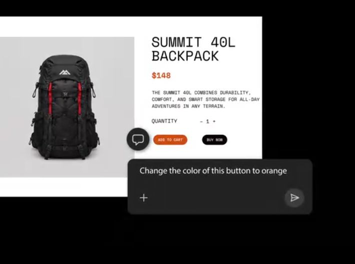
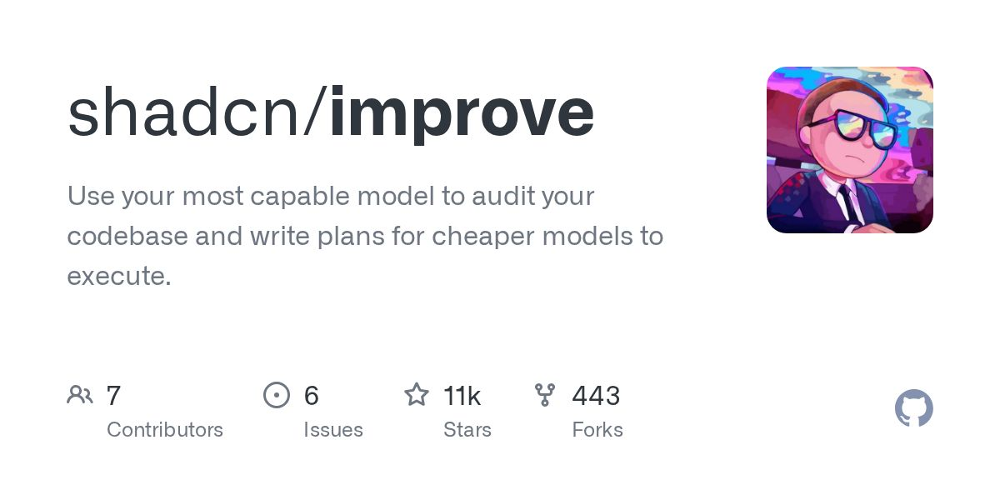
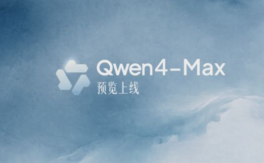

北京互联网法院：平台误判 AI 生成内容未标识构成违约。
原文正文要点
用户发布的原创文字被平台认定为「包含 AI 生成内容但未标识」，遭隐藏并禁言一天，申诉未果后起诉。法院认为算法认定过程由平台掌控，平台应就认定依据作出解释说明，不能仅以技术秘密为由拒绝，判决解除隐藏并删除违规处理记录。AIbase（11-11 16:55）
面向 AI 初学者的每日资讯：要闻、工具、项目与需求动态。
最新一期
时间窗口：11-11 08:00 到 11-12 08:20（台北时间）。已与前 7 期去重，每条均核对正文与日期。
用户发布的原创文字被平台认定为「包含 AI 生成内容但未标识」，遭隐藏并禁言一天，申诉未果后起诉。法院认为算法认定过程由平台掌控，平台应就认定依据作出解释说明，不能仅以技术秘密为由拒绝，判决解除隐藏并删除违规处理记录。AIbase（11-11 16:55）

限时最低 1 折，个人版 Lite 与 Essential 起步价 39 元/月，新客再享 5 折，最低 19.5 元；千问办公、Qoder、千问 App、QwenStudio 已接入。官方未披露参数、基准成绩与正式发布时间。AIbase（11-11 11:43）
Advanced 与 Standard 两版旧语音模式下线后自动切换到 GPT-Live，历史对话保留；部分用户反映新版易打断、上下文衔接较弱。AIbase（11-11 17:18）
路演视频提到 Claude 在 AWS Trainium、Google TPU、NVIDIA GPU 与 AMD GPU 四类芯片上训练和提供服务。Simon Willison（11-11 23:11）
可在 10 秒内生成 4096×4096 图像，最多支持 16 张参考图，覆盖文生图、图像参考与编辑。AI工具集｜Product Hunt（11-11）
默认进入 AI 模式，左侧为 AI 回答、右侧为参考资料；PC 版支持单独检索微信文章与视频号内容。AIbase（11-11 14:58）

Photoshop 新增「重新调光」，升级后的「移除」可一并清除阴影与倒影；Adobe 预览了 MCP 集成，第三方 AI 代理将能直接操作 Photoshop、Illustrator、Premiere 与 After Effects 的本地工程，计划 2027 年初开放。AIbase（11-11 13:55）
一个随机推荐亲子游戏的小程序，收录 64 个无需屏幕的游戏，可按场地、大人体力和孩子年龄筛选；作者称内容由 AI 生成，并亲自带孩子试玩过不少，免费无广告。V2EX（11-11 12:47）
作者使用 Codex 完成的第一款微信小游戏，玩法为叠牌三消，含翻面牌与 30 关挑战。V2EX（11-11 16:39）
楼主对频繁封号、不退款提出疑问，帖子有 198 条回复。V2EX（11-11 10:41）

以下是本期项目及单日新增星数。
一个智能硬件团队寻找常住深圳的开发者，维护 NFC 打卡、积分排行及 OneNET 设备数据展示；稳定期预计每月约 8 小时，维护预算约 1,500 元/月，首次交接与上线联调另行商定。电鸭（11-11 09:39）
楼主参考电商平台上的卡通角色生日祝福定制视频，询问如何用 AI 制作，帖子有 11 条回复。V2EX（11-11 13:04）
作者主要做 Python 自动化、数据采集、Web 全栈与 AI 内容生产，总结了先出需求确认单、定金加里程碑分期、筛选合作方、写明免费维护期等经验。电鸭（11-11 10:10）

Hacker News 搜索接口返回 400；Claude Code、Cursor Changelog、Anthropic News 窗口内无新内容；Codex 仅有预发布版与补丁版，无更新说明；电鸭首页出现验证页，改用帖子接口核验正文与时间。